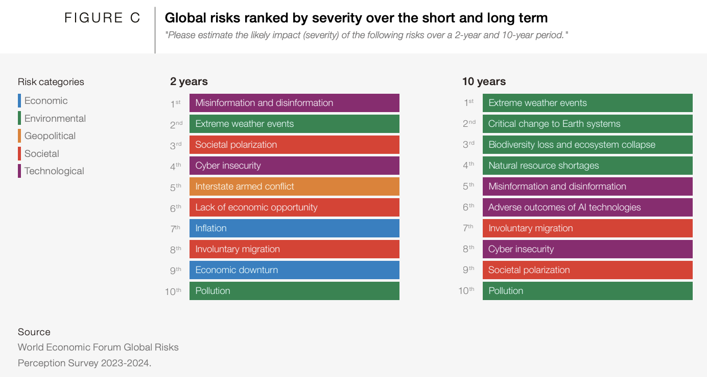
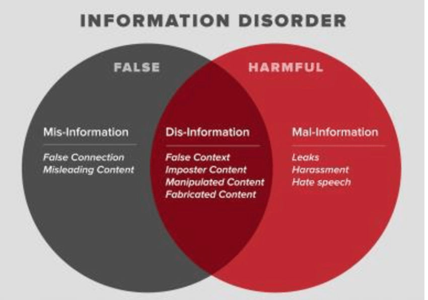
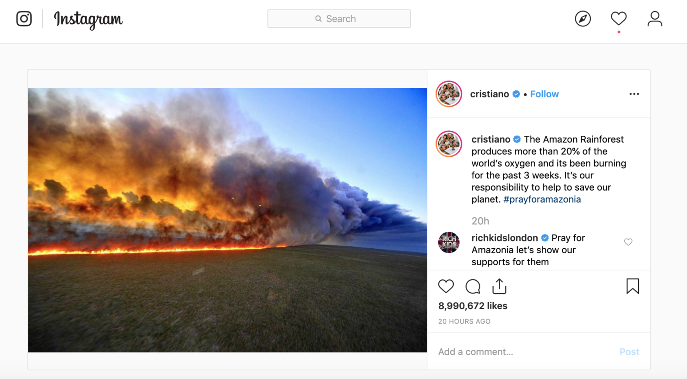
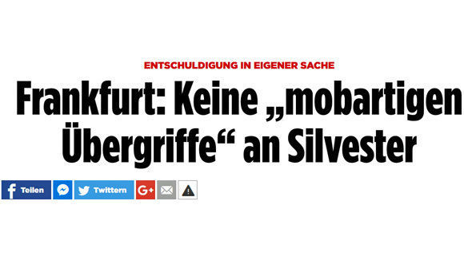
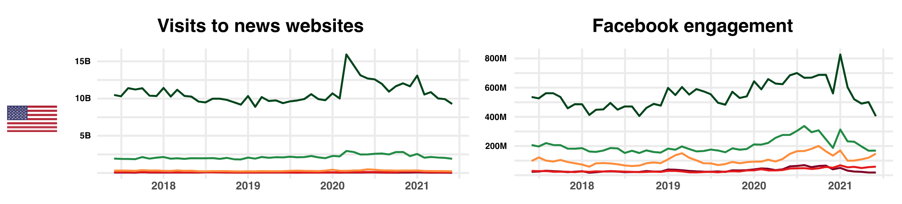
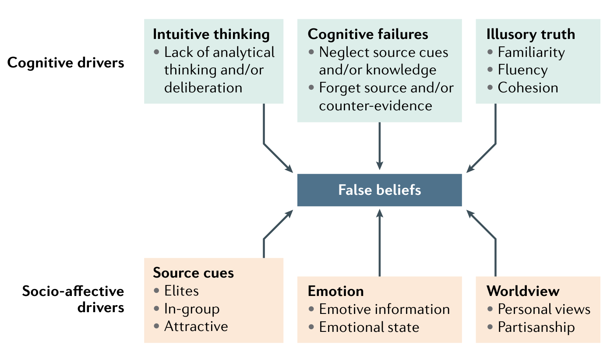

Misinformation in den sozialen Medien
Gastvorlesung von Jula Luehring
13. Mai 2024
Vorstellung
Jula Lühring, M.Sc.
- Studium in Bremen und Amsterdam
- Arbeit im Bereich der Demokratieförderung
- Doktorandin im Computational Communication Science Lab & Complexity Science Hub

Misinformation in den Schlagzeilen
Misinformation als eine der größten Gefahren?
PART I: Was ist Misinformation?
Im Kontext der “Information Disorder”

Trennung von Mis- und Desinformation eher künstlich
Fake News als Subtyp von Desinformation
Fokus auf Schädlichkeit
Misinformation = unwahre Informationen ohne bestimmte Intention
Subtypen
- Zwei Dimensionen: Intention vs. Wahrheitsgehalt
Tandoc et al., 2018
\(\rightarrow\) Aber: Fake News inzwischen eher ein politisiertes Buzzword!
Wie sieht das in der Praxis aus?
Beispiel 1: Unüberprüftes Teilen von Informationen
\(\rightarrow\) unabsichtliche Fehler
Wie sieht das in der Praxis aus?
Beispiel 2: Falsche Zeugenaussagen
\(\rightarrow\) dekontextualisierende Interpretationen
Wie sieht das in der Praxis aus?
Beispiel 3: Pseudojournalismus
\(\rightarrow\) politisch motivierte Desinformationskampagnen
Mögliche Konsequenzen von Misinformation
Auf individueller Ebene
kognitiv (Effekte auf Wissen)
einstellungsbezogen (Effekte auf Meinungen)
emotional (Effekte auf Gefühle)
Verhalten
Mögliche Konsequenzen von Misinformation
Auf gesellschaftlicher Ebene
gruppenbezogene Wahrnehmungsverzerrungen
Mobilisierung und Spaltung
Zynismus & verringertes Vertrauen in die Medien und demokratische Institutionen
PART II: Realitätscheck
Wie verbreitet ist Misinformation?
Altay et al., 2022
1-6% in fünf Studien von 2016-2019
\(\rightarrow\) kleiner Anteil des Nachrichtenkonsums
Und wie hat sich das mit den sozialen Medien verändert?
Ursprung von Misinformation liegt nicht in sozialen Medien, aber existierende Mechanismen werden eventuell verstärkt:
Negative und aufbrausende Emotionen
Popularitätssignale
Superspreader
\(\rightarrow\) Überlappt mit Hassrede und Konflikt zwischen sozialen Gruppen
Und wie hat sich das mit den sozialen Medien verändert?
Minderheit der User:innen teilt Großteil der Falschinformation:
- 1% User teilt 75% (2018-2019), 5% User teilt 50% (2016)
Wer teilt?
Politiker:innen teilen 20% (~69% des Engagement mit Fehlinformation)
extreme Superspreader
\(\rightarrow\) Mensch oder Algorithmus?
Mögliche Konsequenzen von Misinformation
Auf individueller Ebene
kognitiv (Effekte auf Wissen)
einstellungsbezogen (Effekte auf Meinungen)???
emotional (Effekte auf Gefühle)
Verhalten???
\(\rightarrow\) sehr limitierte Effekte!
PART III: Die Psychologie dahinter
Warum glauben Menschen an Misinformation?
Erklärung 1: Kognition

Warum glauben Menschen an Misinformation?
Erklärung 2: Motivation
\(\rightarrow\) politische oder soziale Motivation
\(\rightarrow\) politische Asymmetrie
Was ist die Rolle von Emotionen?
- Mehr Wut und weniger Freude in Reaktion auf Misinformation

- Menschen mit guter und schlechter Urteilsfähigkeit werden wütend
\(\rightarrow\) Funktion von Emotionen hängt von existierenden Einstellungen ab
Luehring*, Shetty*, et al., 2023
PART III: Wie können wir die Verbreitung von Misinformation eindämmen?
Interventionen: Prebunking
Nudges
Wahrheitsgehalt
Quellen
Medienkompetenz
logikbasiert
gamified, z.B. inoculation
+ Skalierbarkeit
- Reduktion von zuverlässigen Informationen
- Kleine Effekte
- Negative Spillover-Effekte
Interventionen: Debunking
Factchecking
Experten: unabhängige Organisationen & als Teil von Redaktionen
Crowdsourced: Birdwatch
+ Überprüfung von politischen Akteur:innen
- Überprüfung von extremen Fällen
- Kleine Effekte & sogar Backfire-Effekte in Zielgruppe
- Reaktionär & nicht sehr skalierbar
Interventionen: Systemisch
Transparenzpflichten und Regulierung von sozialen Medien und Suchmaschinen
Stärkung von unabhängigen Medien und zuverlässigen Informationen
Politische Bildung und Extremismus-Prävention
\(\rightarrow\) Kombination an Interventionen?
Abschluss
Letzte Worte
Starker Fokus auf extreme Formen von Misinformation
Aber weniger extreme, alltägliche Dekontextualisierungen haben nachhaltigere Effekte
\(\rightarrow\) Nicht der Wahrheitsgehalt ist schädlich, sondern die Inhalte!
\(\rightarrow\) Misinformation ist ein perfektes Instrument, um schädliche Inhalte zu verbreiten
Hameleers et al., 2021; Luehring et al., in prep